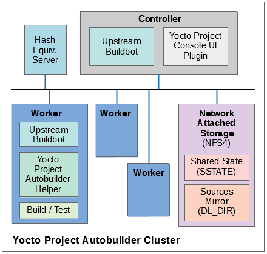

1 The Yocto Project Test Environment Manual
1.1 Benvenuti!
Welcome to the Yocto Project Test Environment Manual, which contains information about the testing environment used by the Yocto Project to make sure each major and minor release works as intended. All the project's testing infrastructure and processes are publicly visible and available so that the community can see what testing is being performed, how it's being done and the current status of the tests and the project at any given time. It is intended that other organizations can leverage off the process and testing environment used by the Yocto Project to create their own automated, production test environment, building upon the foundations from the project core.
This manual is a work in progress and is being loaded initially with information from the README files and notes from key engineers:
yocto-autobuilder2: This README.md is the main README which details how to set up the Yocto Project Autobuilder. The yocto-autobuilder2 repository represents the Yocto Project's console UI plugin to Buildbot and the configuration necessary to configure Buildbot to perform the testing the project requires.
yocto-autobuilder-helper: This README and repository contains Yocto Project Autobuilder Helper scripts and configuration. The yocto-autobuilder-helper repository contains the "glue" logic that defines which tests to run and how to run them. As a result, it can be used by any Continuous Improvement (CI) system to run builds, support getting the correct code revisions, configure builds and layers, run builds, and collect results. The code is independent of any CI system, which means the code can work with Buildbot, Jenkins, or others. This repository has a branch per release of the project defining the tests to run on a per-release basis.
1.2 Yocto Project Autobuilder Overview
The Yocto Project Autobuilder collectively refers to the software, tools, scripts, and procedures used by the Yocto Project to test released software across supported hardware in an automated and regular fashion. Basically, during the development of a Yocto Project release, the Autobuilder tests if things work. The Autobuilder builds all test targets and runs all the tests.
The Yocto Project uses standard upstream Buildbot to drive its integration and testing. Buildbot has a plug-in interface that the Yocto Project customizes using code from the yocto-autobuilder2 repository, adding its own console UI plugin. The resulting UI plug-in allows you to visualize builds in a way suited to the project's needs.
A helper layer provides configuration and job management through
scripts found in the yocto-autobuilder-helper repository. The
helper layer contains the bulk of the build configuration
information and is release-specific, which makes it highly customizable
on a per-project basis. The layer is CI system-agnostic and contains a
number of Helper scripts that can generate build configurations from
simple JSON files.
Nota
The project uses Buildbot for historical reasons but also because many of the project developers have knowledge of Python. It is possible to use the outer layers from another Continuous Integration (CI) system such as Jenkins instead of Buildbot.
The following figure shows the Yocto Project Autobuilder stack with a topology that includes a controller and a cluster of workers:


1.3 Yocto Project Tests --- Types of Testing Overview
The Autobuilder tests different elements of the project by using the following types of tests:
Build Testing: Tests whether specific configurations build by varying MACHINE, DISTRO, other configuration options, and the specific target images being built (or
world). This is used to trigger builds of all the different test configurations on the Autobuilder. Builds usually cover many different targets for different architectures, machines, and distributions, as well as different configurations, such as different init systems. The Autobuilder tests literally hundreds of configurations and targets.Sanity Checks During the Build Process: Tests initiated through the insane class. These checks ensure the output of the builds are correct. For example, does the ELF architecture in the generated binaries match the target system? ARM binaries would not work in a MIPS system!
Build Performance Testing: Tests whether or not commonly used steps during builds work efficiently and avoid regressions. Tests to time commonly used usage scenarios are run through
oe-build-perf-test. These tests are run on isolated machines so that the time measurements of the tests are accurate and no other processes interfere with the timing results. The project currently tests performance on two different distributions, Fedora and Ubuntu, to ensure we have no single point of failure and can ensure the different distros work effectively.eSDK Testing: Image tests initiated through the following command:
$ bitbake image -c testsdkext
The tests use the testsdk class and the
do_testsdkexttask.Feature Testing: Various scenario-based tests are run through the OpenEmbedded Self test (oe-selftest). We test oe-selftest on each of the main distributions we support.
Image Testing: Image tests initiated through the following command:
$ bitbake image -c testimage
The tests use the testimage class and the do_testimage task. See the Performing Automated Runtime Testing section of the Yocto Project Test Environment Manual for more information.
Layer Testing: The Autobuilder has the possibility to test whether specific layers work with the test of the system. The layers tested may be selected by members of the project. Some key community layers are also tested periodically.
Package Testing: A Package Test (ptest) runs tests against packages built by the OpenEmbedded build system on the target machine. See the Testing Packages With ptest section in the Yocto Project Test Environment Manual and the "Ptest" Wiki page for more information on Ptest.
SDK Testing: Image tests initiated through the following command:
$ bitbake image -c testsdk
The tests use the testsdk class and the
do_testsdktask.Unit Testing: Unit tests on various components of the system run through bitbake-selftest and oe-selftest.
Automatic Upgrade Helper: This target tests whether new versions of software are available and whether we can automatically upgrade to those new versions. If so, this target emails the maintainers with a patch to let them know this is possible.
1.4 How Tests Map to Areas of Code
Tests map into the codebase as follows:
bitbake-selftest:
These tests are self-contained and test BitBake as well as its APIs, which include the fetchers. The tests are located in
bitbake/lib/*/tests.Some of these tests run the
bitbakecommand, sobitbake/binmust be added to thePATHbefore runningbitbake-selftest. From within the BitBake repository, run the following:$ export PATH=$PWD/bin:$PATH
After that, you can run the selftest script:
$ bitbake-selftest
The default output is quiet and just prints a summary of what was run. To see more information, there is a verbose option:
$ bitbake-selftest -v
To skip tests that access the Internet, use the
BB_SKIP_NETTESTSvariable when runningbitbake-selftestas follows:$ BB_SKIP_NETTESTS=yes bitbake-selftest
Use this option when you wish to skip tests that access the network, which are mostly necessary to test the fetcher modules. To specify individual test modules to run, append the test module name to the
bitbake-selftestcommand. For example, to specify the tests forbb.tests.data.DataExpansions, run:$ bitbake-selftest bb.tests.data.DataExpansions
You can also specify individual tests by defining the full name and module plus the class path of the test, for example:
$ bitbake-selftest bb.tests.data.DataExpansions.test_one_var
The tests are based on Python unittest.
oe-selftest:
These tests use OE to test the workflows, which include testing specific features, behaviors of tasks, and API unit tests.
The tests can take advantage of parallelism through the
-joption, which can specify a number of threads to spread the tests across. Note that all tests from a given class of tests will run in the same thread. To parallelize large numbers of tests you can split the class into multiple units.The tests are based on Python unittest.
The code for the tests resides in
meta/lib/oeqa/selftest/cases/.To run all the tests, enter the following command:
$ oe-selftest -a
To run a specific test, use the following command form where
testnameis the name of the specific test:$ oe-selftest -r <testname>
For example, the following command would run the
tinfoilgetVarAPI test:$ oe-selftest -r tinfoil.TinfoilTests.test_getvar
It is also possible to run a set of tests. For example the following command will run all of the
tinfoiltests:$ oe-selftest -r tinfoil
testimage:
These tests build an image, boot it, and run tests against the image's content.
The code for these tests resides in
meta/lib/oeqa/runtime/cases/.You need to set the IMAGE_CLASSES variable as follows:
IMAGE_CLASSES += "testimage"
Run the tests using the following command form:
$ bitbake image -c testimage
testsdk:
These tests build an SDK, install it, and then run tests against that SDK.
The code for these tests resides in
meta/lib/oeqa/sdk/cases/.Run the test using the following command form:
$ bitbake image -c testsdk
testsdk_ext:
These tests build an extended SDK (eSDK), install that eSDK, and run tests against the eSDK.
The code for these tests resides in
meta/lib/oeqa/sdkext/cases/.To run the tests, use the following command form:
$ bitbake image -c testsdkext
oe-build-perf-test:
These tests run through commonly used usage scenarios and measure the performance times.
The code for these tests resides in
meta/lib/oeqa/buildperf.To run the tests, use the following command form:
$ oe-build-perf-test <options>
The command takes a number of options, such as where to place the test results. The Autobuilder Helper Scripts include the
build-perf-test-wrapperscript with examples of how to use the oe-build-perf-test from the command line.Use the
oe-git-archivecommand to store test results into a Git repository.Use the
oe-build-perf-reportcommand to generate text reports and HTML reports with graphs of the performance data. See html and txt examples.The tests are contained in
meta/lib/oeqa/buildperf/test_basic.py.
1.5 Test Examples
This section provides example tests for each of the tests listed in the How Tests Map to Areas of Code section.
oe-selftesttestcases reside in themeta/lib/oeqa/selftest/casesdirectory.bitbake-selftesttestcases reside in thebitbake/lib/bb/tests/directory.
1.5.1 bitbake-selftest
A simple test example from bitbake/lib/bb/tests/data.py is:
class DataExpansions(unittest.TestCase):
def setUp(self):
self.d = bb.data.init()
self.d["foo"] = "value_of_foo"
self.d["bar"] = "value_of_bar"
self.d["value_of_foo"] = "value_of_'value_of_foo'"
def test_one_var(self):
val = self.d.expand("${foo}")
self.assertEqual(str(val), "value_of_foo")
In this example, a DataExpansions class of tests is created, derived from
standard Python unittest.
The class has a common setUp function which is shared by all the tests in
the class. A simple test is then added to test that when a variable is
expanded, the correct value is found.
BitBake selftests are straightforward Python unittest. Refer to the Python unittest documentation for additional information on writing such tests.
1.5.2 oe-selftest
These tests are more complex due to the setup required behind the scenes for full builds. Rather than directly using Python unittest, the code wraps most of the standard objects. The tests can be simple, such as testing a command from within the OE build environment using the following example:
class BitbakeLayers(OESelftestTestCase):
def test_bitbakelayers_showcrossdepends(self):
result = runCmd('bitbake-layers show-cross-depends')
self.assertTrue('aspell' in result.output, msg = "No dependencies were shown. bitbake-layers show-cross-depends output: %s"% result.output)
This example, taken from meta/lib/oeqa/selftest/cases/bblayers.py,
creates a testcase from the OESelftestTestCase class, derived
from unittest.TestCase, which runs the bitbake-layers command
and checks the output to ensure it contains something we know should be
here.
The oeqa.utils.commands module contains Helpers which can assist
with common tasks, including:
Obtaining the value of a bitbake variable: Use
oeqa.utils.commands.get_bb_var()or useoeqa.utils.commands.get_bb_vars()for more than one variableRunning a bitbake invocation for a build: Use
oeqa.utils.commands.bitbake()Running a command: Use
oeqa.utils.commands.runCmd()
There is also a oeqa.utils.commands.runqemu() function for launching
the runqemu command for testing things within a running, virtualized
image.
You can run these tests in parallel. Parallelism works per test class,
so tests within a given test class should always run in the same build,
while tests in different classes or modules may be split into different
builds. There is no data store available for these tests since the tests
launch the bitbake command and exist outside of its context. As a
result, common BitBake library functions (bb.\*) are also unavailable.
1.5.3 testimage
These tests are run once an image is up and running, either on target
hardware or under QEMU. As a result, they are assumed to be running in a
target image environment, as opposed to in a host build environment. A
simple example from meta/lib/oeqa/runtime/cases/python.py contains
the following:
class PythonTest(OERuntimeTestCase):
@OETestDepends(['ssh.SSHTest.test_ssh'])
@OEHasPackage(['python3-core'])
def test_python3(self):
cmd = "python3 -c \\"import codecs; print(codecs.encode('Uryyb, jbeyq', 'rot13'))\""
status, output = self.target.run(cmd)
msg = 'Exit status was not 0. Output: %s' % output
self.assertEqual(status, 0, msg=msg)
In this example, the OERuntimeTestCase class wraps
unittest.TestCase. Within the test, self.target represents the
target system, where commands can be run using the run()
method.
To ensure certain tests or package dependencies are met, you can use the
OETestDepends and OEHasPackage decorators. For example, the test
in this example would only make sense if python3-core is installed in
the image.
1.5.4 testsdk_ext
These tests are run against built extensible SDKs (eSDKs). The tests can
assume that the eSDK environment has already been set up. An example from
meta/lib/oeqa/sdk/cases/devtool.py contains the following:
class DevtoolTest(OESDKExtTestCase):
@classmethod def setUpClass(cls):
myapp_src = os.path.join(cls.tc.esdk_files_dir, "myapp")
cls.myapp_dst = os.path.join(cls.tc.sdk_dir, "myapp")
shutil.copytree(myapp_src, cls.myapp_dst)
subprocess.check_output(['git', 'init', '.'], cwd=cls.myapp_dst)
subprocess.check_output(['git', 'add', '.'], cwd=cls.myapp_dst)
subprocess.check_output(['git', 'commit', '-m', "'test commit'"], cwd=cls.myapp_dst)
@classmethod
def tearDownClass(cls):
shutil.rmtree(cls.myapp_dst)
def _test_devtool_build(self, directory):
self._run('devtool add myapp %s' % directory)
try:
self._run('devtool build myapp')
finally:
self._run('devtool reset myapp')
def test_devtool_build_make(self):
self._test_devtool_build(self.myapp_dst)
In this example, the devtool
command is tested to see whether a sample application can be built with
the devtool build command within the eSDK.
1.5.5 testsdk
These tests are run against built SDKs. The tests can assume that an SDK
has already been extracted and its environment file has been sourced. A
simple example from meta/lib/oeqa/sdk/cases/python.py contains the
following:
class Python3Test(OESDKTestCase):
def setUp(self):
if not (self.tc.hasHostPackage("nativesdk-python3-core") or
self.tc.hasHostPackage("python3-core-native")):
raise unittest.SkipTest("No python3 package in the SDK")
def test_python3(self):
cmd = "python3 -c \\"import codecs; print(codecs.encode('Uryyb, jbeyq', 'rot13'))\""
output = self._run(cmd)
self.assertEqual(output, "Hello, world\n")
In this example, if nativesdk-python3-core has been installed into the SDK,
the code runs the python3 interpreter with a basic command to check it is
working correctly. The test would only run if Python3 is installed in the SDK.
1.5.6 oe-build-perf-test
The performance tests usually measure how long operations take and the
resource utilization as that happens. An example from
meta/lib/oeqa/buildperf/test_basic.py contains the following:
class Test3(BuildPerfTestCase):
def test3(self):
"""Bitbake parsing (bitbake -p)"""
# Drop all caches and parse
self.rm_cache()
oe.path.remove(os.path.join(self.bb_vars['TMPDIR'], 'cache'), True)
self.measure_cmd_resources(['bitbake', '-p'], 'parse_1',
'bitbake -p (no caches)')
# Drop tmp/cache
oe.path.remove(os.path.join(self.bb_vars['TMPDIR'], 'cache'), True)
self.measure_cmd_resources(['bitbake', '-p'], 'parse_2',
'bitbake -p (no tmp/cache)')
# Parse with fully cached data
self.measure_cmd_resources(['bitbake', '-p'], 'parse_3',
'bitbake -p (cached)')
This example shows how three specific parsing timings are measured, with and without various caches, to show how BitBake's parsing performance trends over time.
1.6 Considerations When Writing Tests
When writing good tests, there are several things to keep in mind. Since things running on the Autobuilder are accessed concurrently by multiple workers, consider the following:
Running "cleanall" is not permitted.
This can delete files from DL_DIR which would potentially break other builds running in parallel. If this is required, DL_DIR must be set to an isolated directory.
Running "cleansstate" is not permitted.
This can delete files from SSTATE_DIR which would potentially break
other builds running in parallel. If this is required, SSTATE_DIR must
be set to an isolated directory. Alternatively, you can use the -f
option with the bitbake command to "taint" tasks by changing the
sstate checksums to ensure sstate cache items will not be reused.
Tests should not change the metadata.
This is particularly true for oe-selftests since these can run in parallel and changing metadata leads to changing checksums, which confuses BitBake while running in parallel. If this is necessary, copy layers to a temporary location and modify them. Some tests need to change metadata, such as the devtool tests. To protect the metadata from changes, set up temporary copies of that data first.